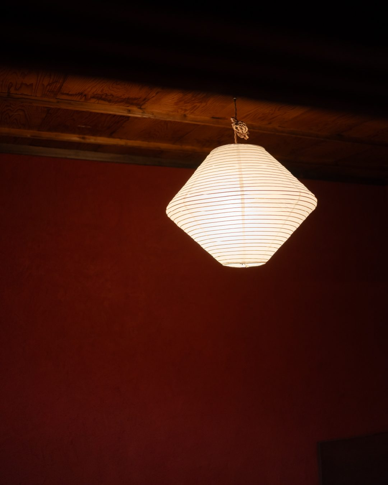
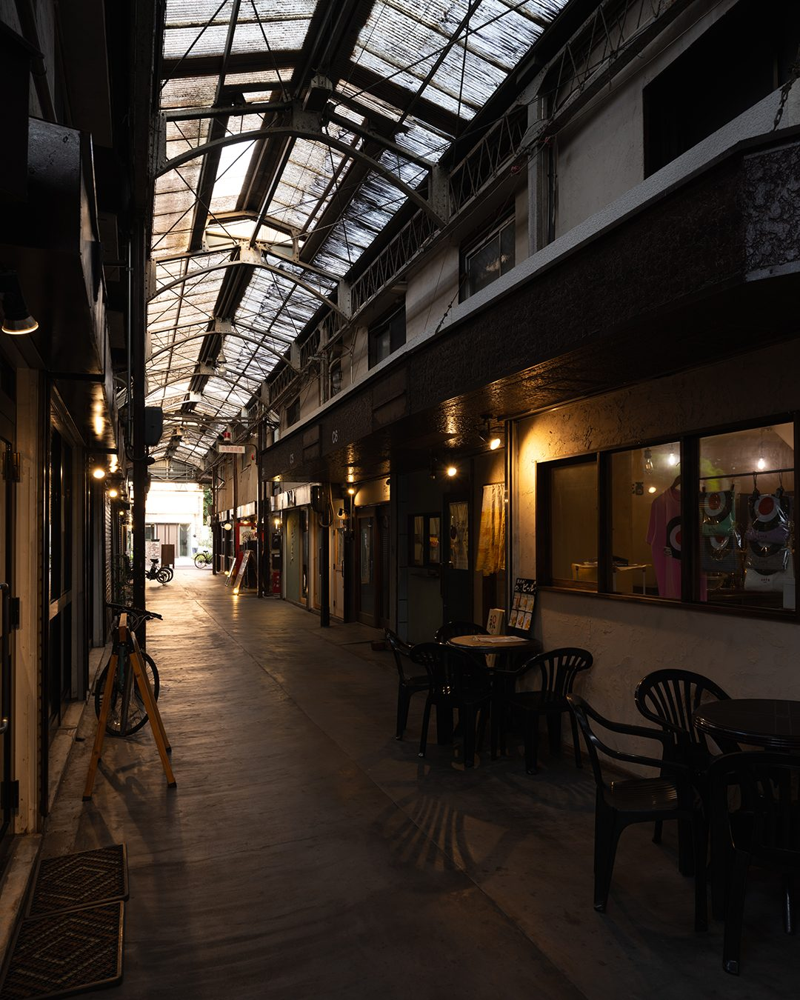
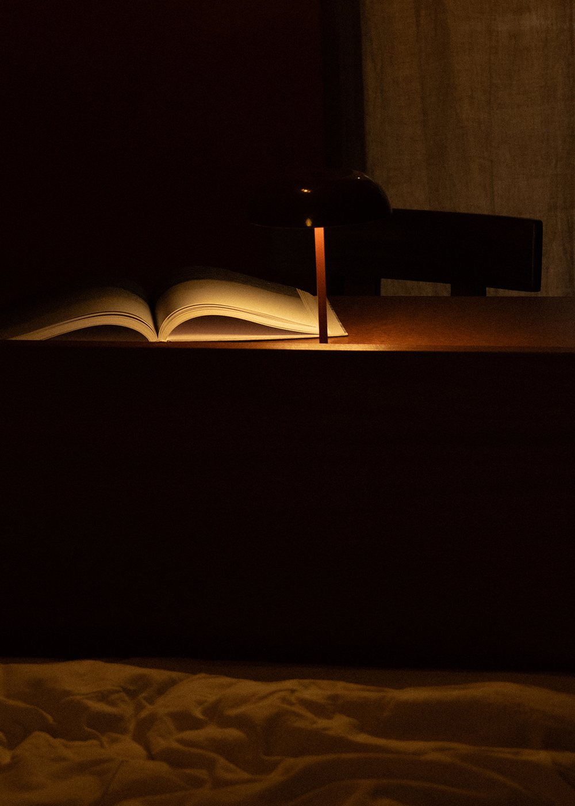
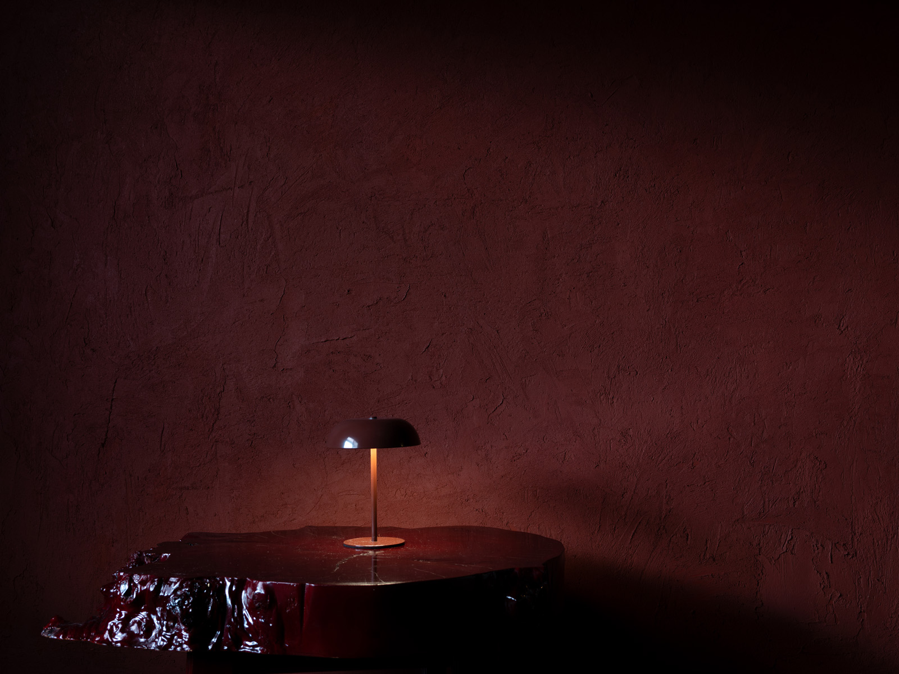

本のページをめくる音から。An art bookstore & stay in a wooden row house, Hanaten, Osaka.
大阪・放出。
レトロな商店街に残る木造長屋の一室。
本を読み、静かに過ごす、一日一組の場所。
A renovated room in an old wooden row house in Hanaten, Osaka — a quiet place to read, to linger, to stay. One group per day.

放出の商店街 — the shopping street

約27㎡の客室に、クイーンサイズのベッドがひとつ。土壁や木の手触りを残した、静かな滞在。
A 27 m² room with a single queen bed, finished in earthen walls and natural wood.
View Stay →建築、アート、写真集。つくることと見ることにまつわる本を、すりガラスの光のもとでゆっくりと選んでいます。
A slow selection of art, architecture, and photography books beneath soft frosted-glass light.
View Books →
本の並ぶ机 — the reading table
Stay with us, or visit the bookstore.
Airbnbで予約する ↗ オンラインショップ ↗ Instagram ↗